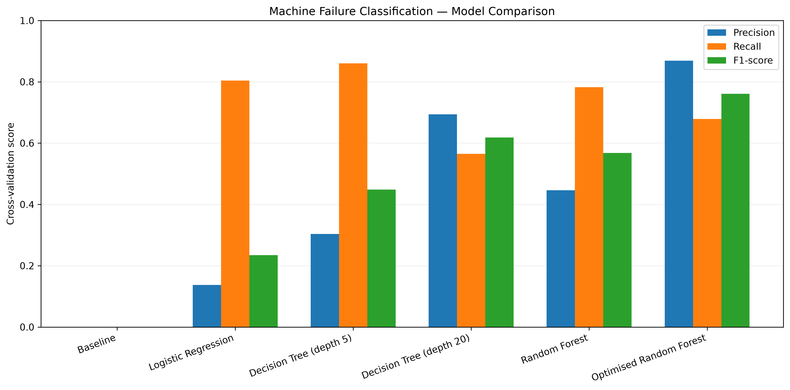
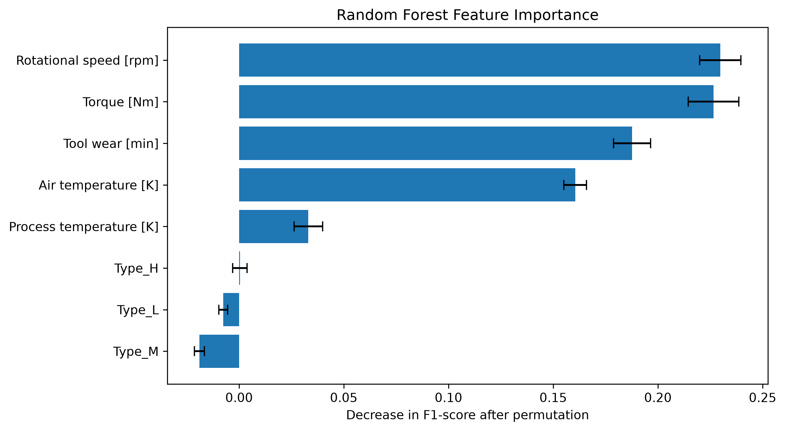
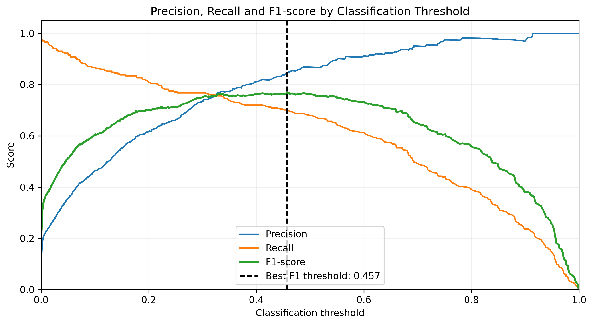

Overview
This independent project investigates whether machine operating conditions can be used to classify equipment failures through supervised machine learning.
Using the synthetic AI4I 2020 Predictive Maintenance dataset, I explored relationships between operating conditions and machine failure, developed several classification models, and investigated how model complexity and hyperparameter optimisation affect predictive performance.
Particular attention was given to the challenges of class imbalance and the trade-off between identifying genuine failures and generating unnecessary maintenance warnings.
Project at a glance
Dataset: 10,000 simulated machine observations
Primary language: Python
Methods: Classification, cross-validation, hyperparameter optimisation
Output: Model comparison, feature importance, classification threshold analysis
The Problem
Unexpected machinery failures can result in expensive repairs, unplanned downtime, and disruption to industrial operations. Identifying operating conditions associated with failures could help maintenance teams identify equipment requiring attention.
However, machine failures are relatively rare. Within the AI4I dataset, only 339 of the 10,000 observations represent failures. A model that simply predicts normal operation could therefore achieve high accuracy without identifying a single genuine failure.
This project investigates whether classification models can identify failures more effectively while balancing the competing objectives of detecting genuine failures and avoiding false alarms.
Analysis Pipeline
Exploratory Analysis
Investigated failure rates across temperature, rotational speed, torque, and tool wear, identifying potentially non-linear relationships with machine failure.
Data Preparation
Selected operating measurements, excluded identifiers and failure-type indicators to avoid target leakage, and created stratified training and testing subsets.
Model Development
Trained Logistic Regression, Decision Tree, and Random Forest classifiers, comparing performance against a baseline model.
Cross-Validation
Applied stratified five-fold cross-validation to evaluate precision, recall, and F1-score across multiple subsets of the training data.
Model Optimisation
Investigated Decision Tree complexity and tested 100 Random Forest hyperparameter combinations using RandomizedSearchCV to identify settings that improve classification performance and balance failure detection against false alarms..
Model Interpretation
Investigated permutation feature importance and classification thresholds to understand model behaviour and the trade-off between missed failures and false alarms.
Key Results
Baseline Performance
The baseline achieved approximately 96.6% accuracy while identifying no failures. This demonstrated why accuracy alone was unsuitable for the imbalanced dataset.
Optimised Random Forest
An optimised Random Forest achieved the highest mean cross-validation F1-score of 0.761, compared with 0.568 for the original configuration. Its precision increased substantially to 0.869, with recall of 0.679.
Decision Tree Complexity
A shallower Decision Tree achieved the highest recall (0.860), while increasing tree depth improved precision at the expense of missing a greater proportion of genuine failures.
Classification Threshold
Lowering the optimised Random Forest's failure prediction threshold from 0.5 to 0.457 slightly improved its F1-score to 0.768. This allowed the model to detect more genuine failures, but also increased the number of false alarms, demonstrating the trade-off between recall and precision.
Model Performance Comparison
The models were compared using stratified five-fold cross-validation on the training dataset. Precision measures how many predicted failures were genuine, while recall measures how many actual failures were correctly identified. F1-score provides a combined measure of both.
| Model | Precision | Recall | F1-score |
|---|---|---|---|
| Baseline | 0.000 | 0.000 | 0.000 |
| Logistic Regression | 0.137 | 0.804 | 0.235 |
| Decision Tree (depth 5) | 0.304 | 0.860 | 0.449 |
| Decision Tree (depth 20) | 0.694 | 0.565 | 0.619 |
| Random Forest | 0.447 | 0.782 | 0.568 |
| Optimised Random Forest | 0.869 | 0.679 | 0.761 |
The optimised Random Forest achieved the highest F1-score (0.761), while the depth-5 Decision Tree identified the greatest proportion of actual failures (recall of 0.860). The preferred model therefore depends on whether reducing false alarms or detecting more failures is the greater priority.
Selected Visualisations
Selected outputs illustrating model performance, influential operating measurements, and the effect of classification thresholds.



Practical Implications
The highest F1-score does not necessarily correspond to the most appropriate model for every industrial application. The relative costs of missed failures and unnecessary inspections are important considerations when selecting a model and classification threshold.
For example, if a missed failure hypothetically resulted in £50,000 of repair costs and downtime, while a false alarm required a £500 inspection, detecting a greater proportion of failures could be economically preferable even if this produced additional false alarms.
This highlights the potential value of cost-sensitive model evaluation, where maintenance decisions are guided by the operational consequences of prediction errors rather than statistical performance alone.
Limitations
The AI4I dataset is synthetic and contains simulated failure outcomes. The models classify machine failure conditions rather than predicting when future breakdowns will occur, and their performance does not establish suitability for deployment on real industrial equipment.
The optimised Random Forest's cross-validation performance may be optimistic because hyperparameters were selected using the same validation folds. The original test subset was also examined during model development, so it was not retained as a completely independent final evaluation dataset.
Technical Skills
Project Outputs
The complete analysis is available through two detailed reports, containing the Python code, visualisations and interpretation of the results.
The analysis was developed in Python using Pandas, NumPy, Matplotlib and scikit-learn. Fixed random seeds and stratified cross-validation were used to support reproducibility.